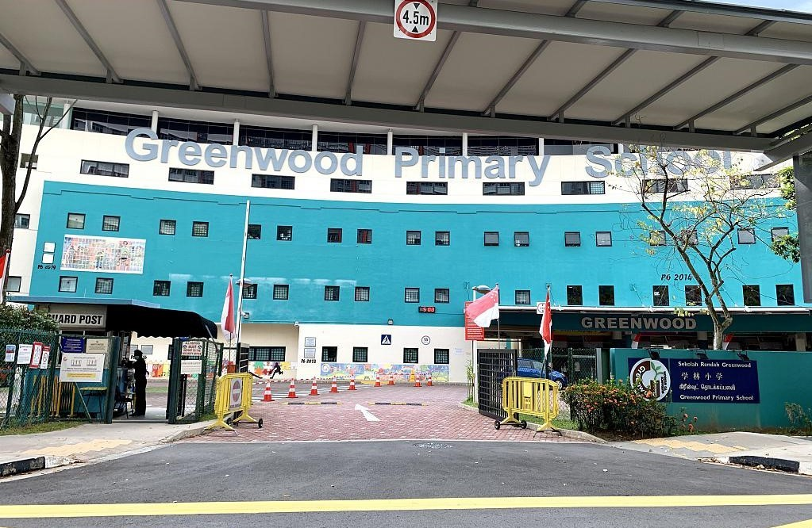
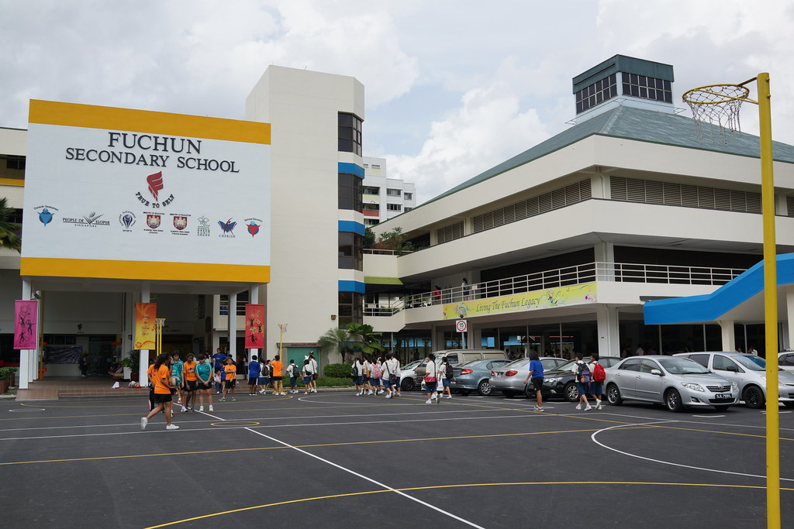
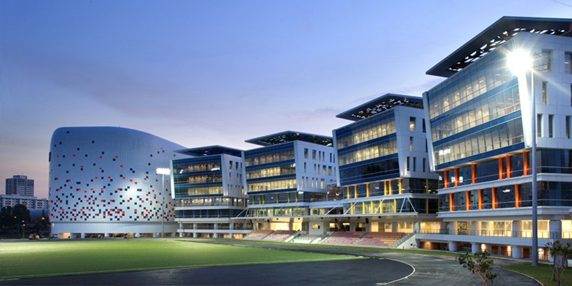
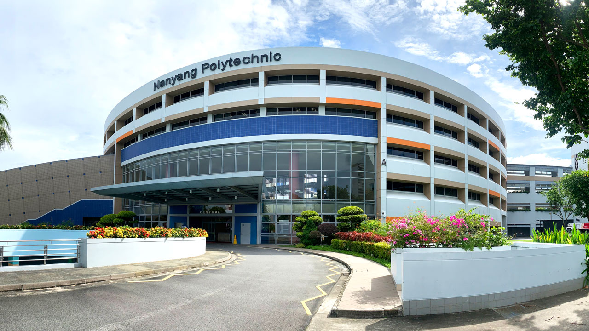

I wasn't doing well in primary school but I managed to pass and enter seconary school thankfully, I also joined dikir barat as a CCA.
EDUCATION
Greenwood Primary School

Fuchun Secondary School

In secondary school I joined NCC in sec 1 and Mechatronics CCA in sec 3-4
ITE

ITE College West (Jan 2017- Dec 2018) - Digital Audio & Video Production [DAVP]
Video Production caught my interest at first when I first about to enrolled into ITE Nitec.
Knowing that I will be taught editing I was intrigued by the course as I had passion on video editing before.
The course has shown me and help me understand the process of video production.
ITE College Central (April 2020- March 2022) - Games Programming & Development [GPD]
In this course I've learned the fundamentals of programming with C# and Unity game engine.
This course has enhance my creativity and exposed me in working into teams
NYP

Nanyang Polytechnic (April 2022- March 2025)[Current] - Games Development & Technology [GDT]
Currently studying in Nanyang Polytechnic, this course has taught me and push me a lot in Year 1
, I am currently in my Year 2 and hopefully i'll be able to hone my knowledge on developing games and sharpen my programming skills